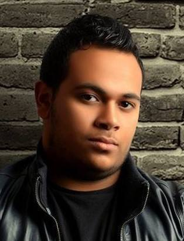

Amr Eid Mohamed Saber
Developer
OBJECTIVE
Detail-oriented entry-level software engineer who offers versatility and a strong work
ethic. Seeking a position that requires troubleshooting and debugging of client
applications.
Seeking an entry-level role within a software firm where success is paramount
PERSONAL DATA
- Full Name: Amr Eid Mohamed Saber
- Date of Birth: 1 /4/1995
- Nationality: Egypt
- Marital Status: single
- Military Status: Exemption
- Driver License: Have international License
- Location: Cairo, Egypt
CONTACT INFO
- Mobile: 011117393338
- 220160055@fa-hists.edu.eg
- linkden
EDUCATION
- 2016 - 2020 BA in Computer Science
- Future Academy, Egypt.
- Major: Software Engineering
- Minor: Computer Department
- Overall Grade: Good
- 2013 High School
- Amen el raye, Egypt.
- Overall Grade: excellent
Hobbies
- Sports
- books
- search
- Programming
LANGUAGES
- Arabic: Fluent.
- English: Fluent.
- French: Good
SOFT SKILLS
- Hard worker, active, ambitious and flexible.
- Highly effective Communication Skills.
- Good leadership and team working skills.
- Critical thinking and problem solving skills.
- Quick and self-learner.
- Self-Independent.
TECHNICAL SKILLS
PROFESSIONAL EXPERIENCE
- (2016)
- Feb to March: create library management system (C++, java)
- March to October : training about circuits design and Arduino uses
- December : create small car with ( Bluetooth, sensor, Arduino , relay , motors , body)
- (2017)
- Jan to Feb : create library management system (java) using quick sort
- Feb to April : create desktop app about web crawler (java Fx) using mcv
- April to December: training about data base
Advanced:
- Database: (ORACLE-MYSQL) .
- Java EE
- Java SE
- Java Fx
Intermediate:
- C++
- PL/SQL
- HTML5
- CSS
- C#
- C
- Arduino c